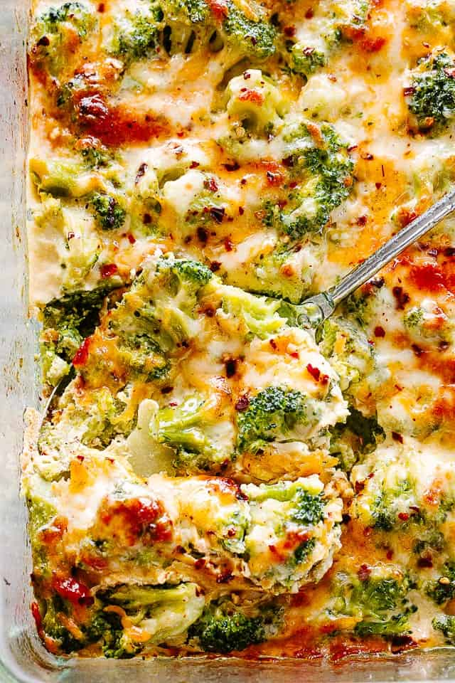

Broccoli Cheese Casserol
My Broccoli Cheese Casserole is a simple and DELICIOUS side dish or light dinner. Creamy, cheesy, and topped with crunchy, buttery crackers, this is has been a favorite since I was a kid, and is STILL one of the best casserole recipes ever!

Ingredients
- 2 tablespoons dry bread crumbs
- 260 g Steamed Broccoli
- 551 g Mornay Sauce (made with Cheddar)
- 961 g Au Gratin I or II
Directions
- Position rack in the upper third of the oven
- Preheat the oven to 425 degrees Farenheit
- Butter a shallow 2-quart baking dish
- Sprinkle the breadcrumbs into the dish
- Fold the steamed broccoli and mornay sauce into the dish
- Spread evenly in the dish and top with Au Gratin
- Bake until bubbling around the edges and browned ~20 min
My Review: A yummy broccoli recipe but not the best. The rich amount of cheese, while delicious, takes away from the naturally good taste of the broccoli.